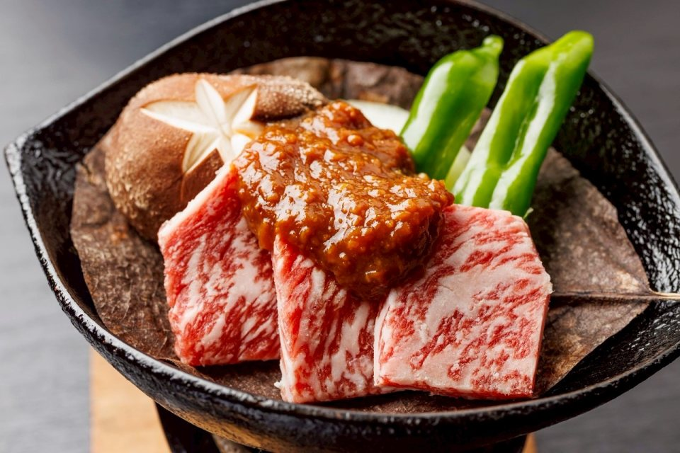
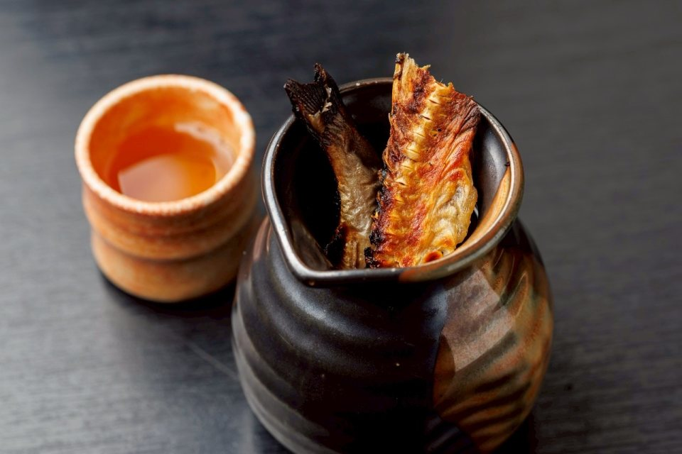
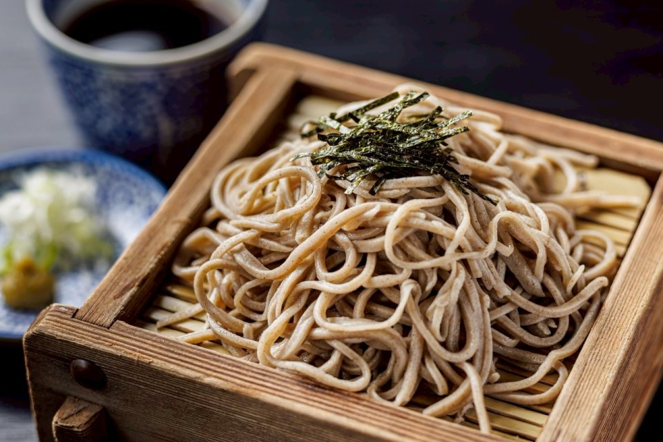
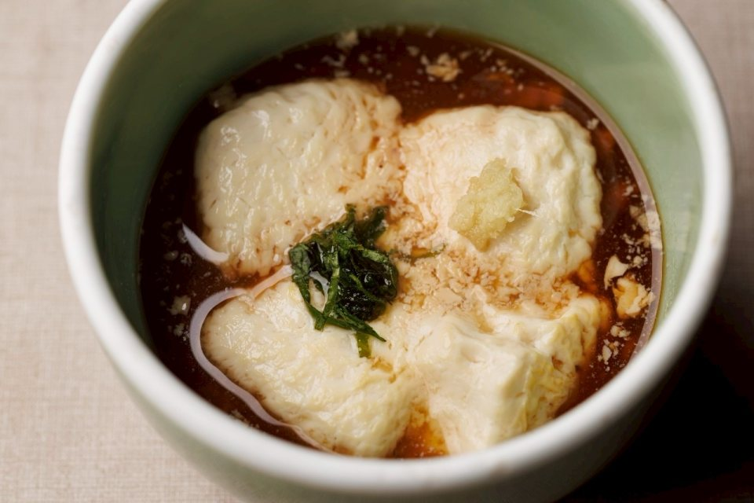
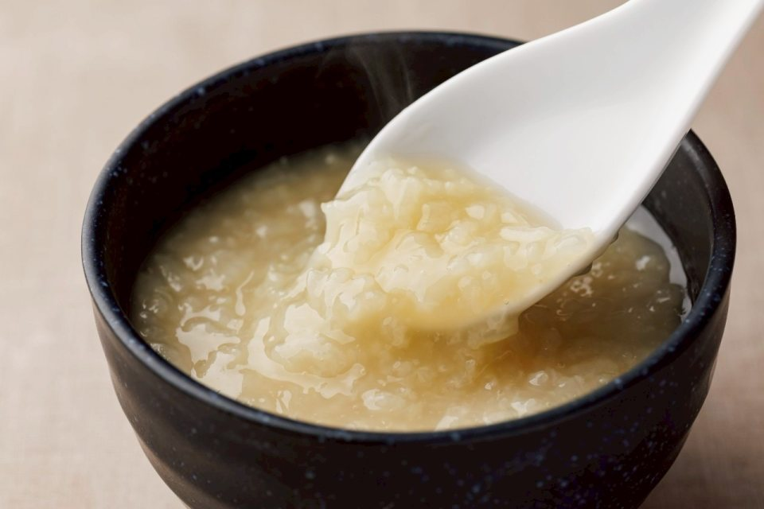
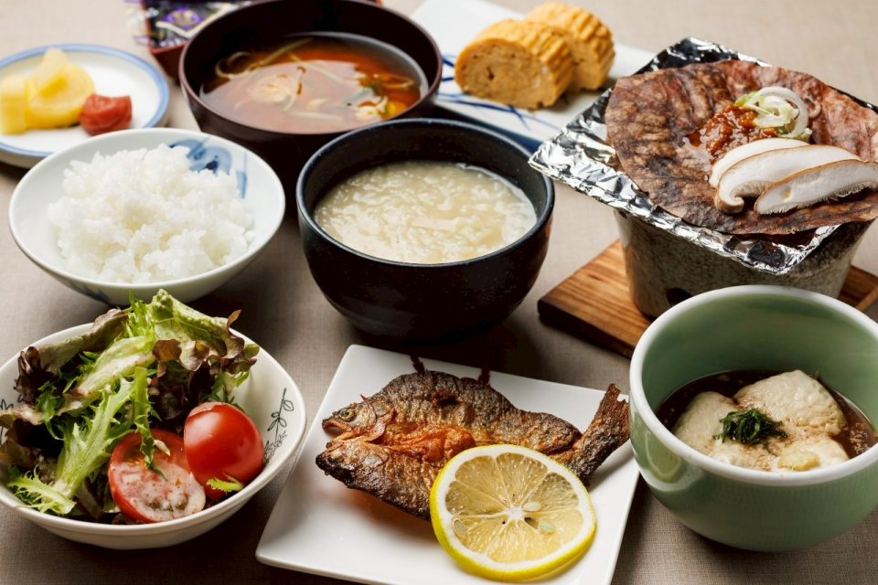
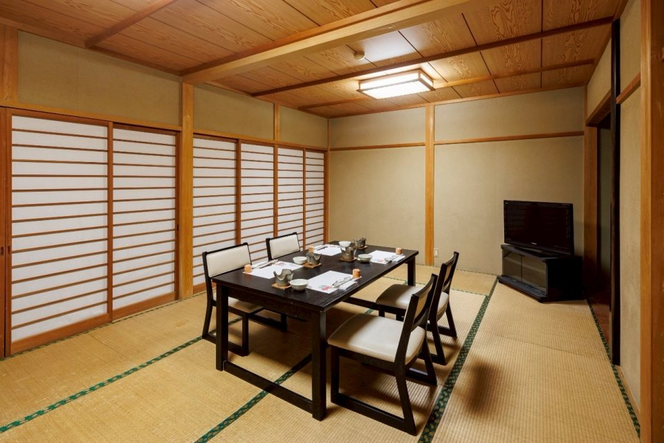
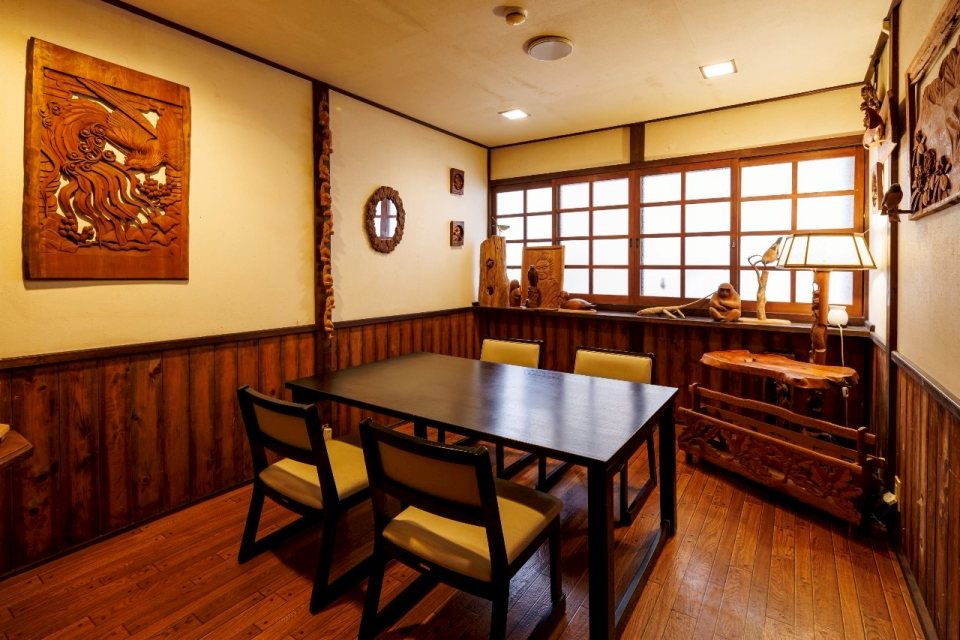
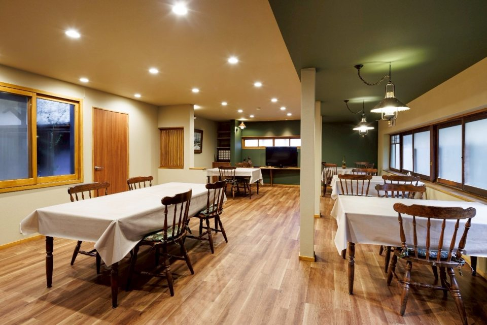

飛騨の恵みを、手作りで
「朴葉みそ焼き」は飛騨の郷土料理には欠かせないメニューです。
飛騨牛や蕎麦、大洞川養魚場の岩魚など、旬の食材を真心込めた手作りでお出ししております。

飛騨牛を自家製味噌とともに朴葉の上で焼き上げます。香ばしい味噌の香りが飛騨牛の旨味を引き立てます。

焼いた岩魚の旨味が溶け出した、通好みの骨酒。奥田屋の夜を彩る特別な一杯です。

蕎麦は打ちたて茹でたて、蕎麦掻きは「えごま」のたれでお召し上がりいただきます。

天然炭酸泉（鉱泉）で温めることで、豆腐の角が取れ、とろりとした食感に。温泉宿ならではの贅沢です。

奥田屋自慢の温泉で炊き込んだミネラル豊富な「温泉粥」。炭酸泉ならではのまろやかな味わいです。

温泉粥に朴葉みそ、虹鱒の開き、温泉卵。体に染み渡る日本の朝ごはんをご用意します。
夕食はコースにより、食堂、畳ダイニング、またはお部屋にて。朝食は食堂になります。



※11,000円以上のコースでは、間仕切りされた畳ダイニングまたはお部屋を優先いたします。